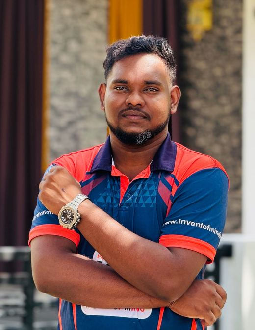

Undergraduate student at the University of Vavuniya, passionate about technology, building useful digital solutions, and learning something new every day.

I am Sivanantham Thanoshan, an undergraduate student following the Bachelor of Information and Communication Technology Studies (Honours) – BICTS (Hons) – degree at the University of Vavuniya, Sri Lanka.
My degree gives me a strong foundation in programming, software development, databases, networking and modern ICT practices. I enjoy turning ideas into real, working solutions and I am always eager to improve my technical and teamwork skills.
I am looking for opportunities such as internships and projects where I can learn, contribute and grow as a future IT professional.
Bachelor of Information and Communication Technology Studies (Honours) · Currently studying · Faculty of Technological Studies
Completed an English diploma, improving my communication and professional English skills.
Add a short description of your best academic project here.
Describe something you built on your own and the tools you used.
More projects will be added as I keep learning and building.
Open to internships, collaborations and new opportunities. Let's connect!